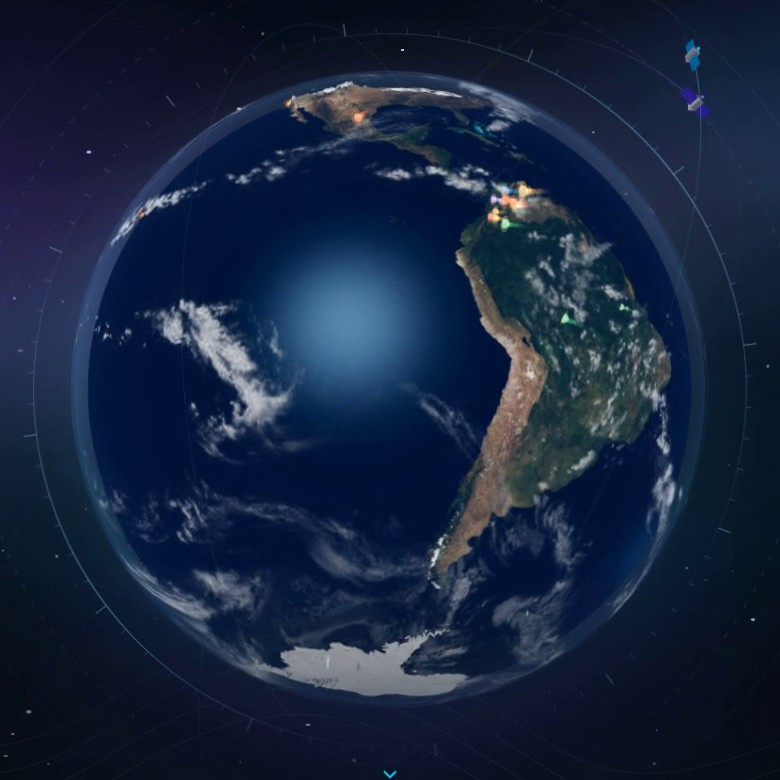
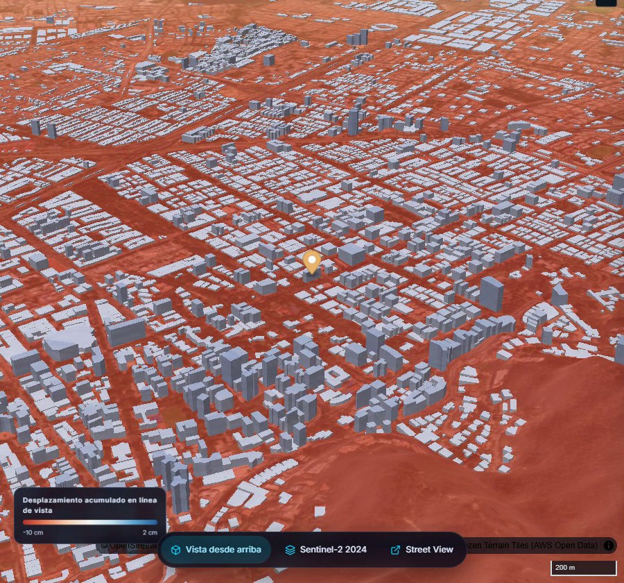

SAROS · MAQUETAS DE REDISEÑO
Tres direcciones
Atlas · Mando · Inmersivo
sarosMapaAlertasColombiaMétodoNISAR · pasa en 2 h 14 min
EDICIÓN · NOVIEMBRE 2026
La tierra
también habla.
Aprende a escucharla.
Mapas de radar de NISAR, explicados con calma: dónde se mueve el suelo en Colombia, qué significa y qué hacer.
zonas vigiladas
en Colombia
en atención alta
Fig. 1 — Nevado del Ruiz visto por el radar. Azul: el suelo sube.
● 14 nov · Ladera de Norte de Santander se acelera● 12 nov · Ruiz: levantamiento estable● 10 nov · La Mojana: agua baja
A · ATLASClaro y editorial, como una revista científica: titulares que se revelan, imagen que se descubre, pines que caen.
sarosColombia › Caldas y TolimaVolcán · atención moderada
Fig. 2 — Vista 3D del volcán con la capa de deformación.
Nevado del Ruiz
El terreno se eleva
14.9 mm/mes
QUIÉN SE AFECTA
- Sigue los boletines del SGC.
- Cubre cultivos, forraje y agua.
- Conoce la ruta lejos de los ríos.
A · ATLASLa zona como un artículo: cifra grande, gráfica que se dibuja a tinta, barras sobrias y pasos numerados.
sarosMapa · personalizar

Capas
Elige qué ver sobre el mapa.
Lluvia 72 hIDEAM · NASA IMERG
Sismos recientesSGC · USGS
Vías y puentesOpenStreetMap
FONDO
Satélite
 Relieve
Relieve
A · ATLASCapas personalizables con APIs abiertas: lluvia, sismos, vías y población se encienden sobre el mapa.
SAROS//MANDO
ALT KM
BANDA L 24 cm · S 9 cmREVISITA 12 D
● ENLACE ACTIVO · PRÓX. PASADA CO 02:14:20

7.88N 72.50W
VISTA ORBITAL · TIEMPO REAL
LAT −90…90 · LON −180…180
Registro en vivo
[19:02:11] CMR · 4 escenas GCOV nuevas
[19:02:40] GUNW · Norte de Santander
[19:03:02] ANÁLISIS · ritmo +38% vs inicial
[19:03:03] AVISO · aceleración detectada
[19:03:20] IDEAM · lluvia 72 h: 118 mm
[19:03:21] NOTIFICADO · 3 suscriptores
B · MANDOCentro de control técnico: telemetría, barrido de radar, registro que se escribe en vivo. Para equipos de gestión del riesgo.
SAROS//MANDOZONA › NEVADO DEL RUIZ · 4.892N 75.324W● ATENCIÓN MODERADA
+14.9 mm/mes · ACELERA: NO
Desplazamiento LOS
+14.9 mm/mes
AGOSEPOCT+90D
Matriz de exposición
HOY30D60D90D
AGRICULTURA
GANADERÍA
VIVIENDA
VÍAS
Protocolo
01 Boletines SGC ·
02 Cubrir cultivos y agua ·
03 Rutas lejos de cauces
B · MANDOZona con retícula y mira que fija el punto; la exposición se proyecta en una matriz de 0 a 90 días.
Lluvia acumulada 72 hIDEAM · IMERG
Lluvia pronosticada 24 hOpen-Meteo
Amenaza por movimientos en masaSGC
Pila de capas
≡ Deformación NISAR80%
≡ Lluvia 72 h60%
≡ Amenaza SGC40%
≡ Fondo satelital100%
B · MANDOCapas por comandos (Ctrl K): escribes, activas y ordenas la pila; cada capa dice de qué API viene.
SAROSExplorarAlertasHistorias● NISAR en órbita
NEVADO DEL RUIZ · COLOMBIA
El volcán respira.
Y desde el espacio lo vemos subir 14.9 mm cada mes.
Entrar a la zona →

BogotáSe hunde 2.9 cm/mes
Norte de SantanderLadera acelerando
C · INMERSIVOCinematográfico: el lugar ocupa toda la pantalla, el titular cuenta una historia y las zonas desfilan en tarjetas de cristal.
VOLCÁN · ATENCIÓN MODERADA
Nevado del Ruiz
A QUIÉN AFECTA
🌾 Agricultura · alta
🐄 Ganadería · media
🏠 Vivienda · media
Sigue los boletines del SGC, cubre cultivos y agua, y conoce tu ruta de evacuación lejos de los ríos.
C · INMERSIVOLa cámara empuja hacia el lugar y la información flota en cristal; la línea de tiempo se reproduce sola.
Capas
💧
Lluvia
🌋
Sismos
🛣️
Vías
👥
Población
🏙️
Ciudad 3D
🔥
Incendios
C · INMERSIVOSelector radial de capas: se abre alrededor del dedo, enciende lluvia y cambia el fondo a ciudad 3D con un fundido.
ELIGE UNA DIRECCIÓN · O MEZCLA LO MEJOR DE CADA UNA
AtlasClaro, editorial y calmado. Ideal para el público general y la presentación del reto.
MandoDenso y técnico. Ideal para UNGRD, alcaldías y equipos que vigilan a diario.
InmersivoEmocional y visual. Ideal para el video del reto y para contar historias.
Maquetas de concepto · imágenes reales del prototipo SAROS · cifras de demostración